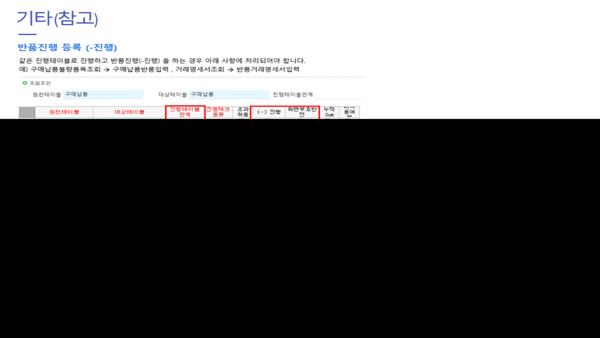

같은 진행테이블로 진행 (ex. 반품)

SELECT * FROM _TCAPgm WHERE Caption = '거래명세서입력' -- 500626
SELECT * FROM _TCAPgm WHERE Caption = '거래명세서조회' -- 500629
SELECT * FROM _TCAPgm WHERE Caption = '거래명세서품목조회' -- 500630
SELECT * FROM _TCAPgm WHERE Caption = '거래명세서입력_svs' -- 149710020
SELECT * FROM _TCAPgm WHERE Caption = '거래명세서조회_svs' -- 149710030
SELECT * FROM _TCAPgm WHERE Caption = '거래명세서품목조회_svs' -- 149710045
SELECT * FROM _TCAPgm WHERE Caption = '반품거래명세서입력_svs' -- 149710164
SELECT * FROM _TDAProgFromPGM WHERE FromPGMSeq IN(500626,500629,500630)
SELECT * FROM _TDAProgFromPGM WHERE FromPGMSeq IN(500626,500629,500630)
SELECT B.Caption, B.PgmId, A.*
FROM _TDAProgFromPGM AS A
JOIN _TCAPgm AS B ON B.PgmSeq = A.FromPGMSeq
WHERE B.Caption LIKE '거래명세서입력%'
INSERT INTO _TDAProgFromPGM SELECT 18, 149710020, 27292, GETDATE() -- 거래명세서입력_svs
INSERT INTO _TDAProgFromPGM SELECT 18, 149710030, 27292, GETDATE() -- 거래명세서조회_svs
INSERT INTO _TDAProgFromPGM SELECT 18, 149710045, 27292, GETDATE() -- 거래명세서품목조회_svs
SELECT B.Caption, B.PgmId, A.*
FROM _TDAProgToPGM AS A
JOIN _TCAPgm AS B ON B.PgmSeq = A.ToPGMSeq
WHERE B.Caption LIKE '반품거래%'
INSERT INTO _TDAProgToPGM SELECT 18, 149710164, 27292, GETDATE() -- 반품거래명세서입력_svs
INSERT INTO _TDAProgFromPGM SELECT 18, 149710020, 27292, GETDATE() -- 거래명세서입력_svs
INSERT INTO _TDAProgFromPGM SELECT 18, 149710030, 27292, GETDATE() -- 거래명세서조회_svs
INSERT INTO _TDAProgFromPGM SELECT 18, 149710045, 27292, GETDATE() -- 거래명세서품목조회_svs
INSERT INTO _TDAProgFromPGM SELECT 18, 149710164, 27292, GETDATE() -- 반품거래명세서입력_svs
-- 서로 같은 진행테이블을 사용하는 거래명세표_emk와 판매품목반품등록_emk 간의 진행을 설정하기 위한 스크립트입니다.
-- 18 : 거래명세서입력
-- 101820032 : 거래명세표_emk
-- 101820053 : 판매품목반품등록_emk
SELECT * FROM _TDAProgFromPGM WHERE FromPGMSeq = 521290
SELECT * FROM _TDAProgToPGM WHERE ToPGMSeq = 521290
INSERT INTO _TDAProgFromPGM
SELECT 18, 128410366, 1, GETDATE()
INSERT INTO _TDAProgToPGM
SELECT 18, 101820053, 1, GETDATE()